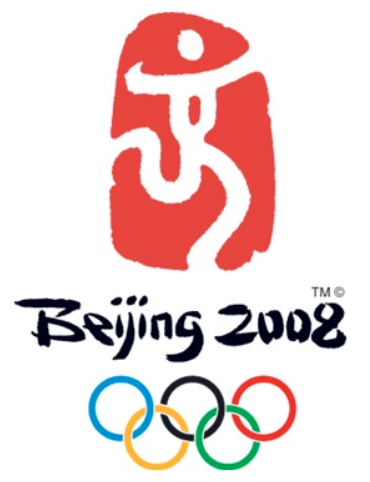
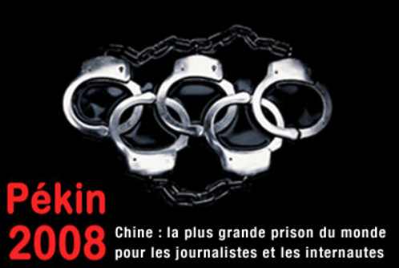

La Chine a tout d’abord une très forte croissance démographique. Celle-ci s’appuie sur des atouts nombreux avec de très vaste territoire, des milieux naturels très variés, grands fleuves de plus de 5000 Km de long (cf le Yangzi une grande artère navigable), des ressources naturelles et énergétiques abondantes (charbon, mais aussi du pétrole et du gaz, même si pétrole insuffisant), terres cultivables, main d’œuvre abondante (et à bon marché pour les entreprises étrangères jusqu’à il y a peu), et un marché de consommation en expansion.
De plus, la population nombreuse (594 millions en 1953, 1,5 milliards aujourd’hui), mais cherche à freiner croissance démographique.
Cependant, les enjeux environnementaux se posent avec acuité. La Chine utilise surtout le charbon comme source d’énergie. Les espaces industriels et urbains souffrent d’une pollution atmosphérique importante (centrales thermiques), les fleuves et l’eau sont pollués (rejets de produits toxiques). La Chine premier émetteur mondial d’oxyde de carbone. Il y a des lois de protection de l’environnement mais peu appliquées, et dans les conférences internationales sur le climat la Chine refuse toute contrainte au nom de sa souveraineté.
Dans la course à la modernité, le patrimoine culturel (par exemple quartiers anciens des grandes villes) est aussi mis à mal et des paysans sont chassés de leurs terres à cause de grands projets immobiliers ou de barrages (Trois Gorges).
Il y a aussi des contrastes spatiaux et sociaux très accentués.
En effet, l’urbanisation est accélérée, aujourd’hui presque la moitié de la population est urbaine alors que en 1980 90% était rurale. 8 villes de plus de 4M d’habitants dont 3 de plus de 10M (si on compte seulement la ville centre et pas toute la municipalité). Les grandes métropoles sont surtout côtières, et rayonnent sur un vaste espace. La plus attractive et la plus peuplée est Shanghai, qui est aussi une vitrine de la modernité chinoise et a l’objectif de devenir une métropole internationale, rivalisant avec les autres métropoles asiatiques. On a aussi quelques grandes villes à l’intérieur dont Chongqing est une ville de 4 millions d’habitants mais son aire urbaine est de 31 millions (peut être la plus grande du monde!)
La pauvreté des campagnes et les opportunités d’emploi en ville provoquent un exode rural très important depuis les années 1990. Mais la liberté de déplacement est restreinte par la nécessite de disposer d’une autorisation de résidence (hukou) en vigueur depuis 1958. Ceux qui n’en disposent pas forment une catégorie de travailleurs sans aucun droit (pas accès à services de santé ou d’éducation publics), ils travaillent notamment dans les grands chantiers de construction ou dans les petits métiers urbains (restaurants…), sont logés dans des dortoirs, des usines désaffectées.
Le contraste entre la Chine intérieure et la Chine littorale est très marqué, la stratégie économique entraîne un phénomène de littoralisation des activités car la Chine littorale est l’interface avec le monde extérieur. La Chine littorale rassemble la population la plus dense et la plus urbanisée ainsi que les principales métropoles et c’est la partie la plus riche, la plus développée et la plus moderne de la Chine.
Le Rôle de la Chine en Asie évolue de plus en plus.La Chine occupe une place stratégique, avec sa façade maritime au cœur des routes commerciales. Cet espace autour de la Mer de Chine connaît une forte intégration économique, d’abord avec le rôle dynamisateur du Japon, aujourd’hui de la Chine. La Chine a des revendications territoriales sur Taïwan et des îles de la mer de Chine qu’elle veut récupérer car cela étendrait beaucoup sa ZEE (zone économique exclusive) avec des ressources en pétrole. La Chine a noué des relations commerciales et financières intenses avec les pays de cet espace asiatique : plusieurs pays asiatiques investissent en Chine (Taiwan, japon, Corée du sud, Singapour) et la Chine investit et implante ses entreprises dans les pays moins développés. Elle bénéficie aussi de son lien avec les populations d’origine chinoise qui sont nombreuses en Asie (Indonésie, Singapour…) que le gouvernement chinois incite à investir en Chine. Mais son influence connaît certaines limites : elle a signé des accords de coopération avec l’ASEAN mais n’en fait pas partie. La concurrence est aussi politique : ainsi en est il d’un contentieux historique avec le Japon ou d’un conflit territorial avec l’Inde, autre puissance émergente asiatique. La Chine conquiert des marchés (les produits chinois sont largement vendus en Afrique, en Europe) et investit à l’étranger, surtout dans les pays en développement, notamment en Afrique où la présence chinoise est un fait nouveau (chantiers de construction, barrages, pétrole). Ces marchés sont parfois complétés par du land grabbing.
De plus, la Chine cherche enfin à donner d’elle même une « bonne » image, par exemple en organisant les Jeux Olympiques en 2008
Elle a aussi organisé une exposition universelle en 2010, en développant le tourisme, en fondant des instituts culturels : plus de 700 instituts Confucius (enseignement de la langue, promotion de la Chine) alors qu’il n’y en avait seulement 80 en 2004. Ce qui ne va pas parfois sans contestations :
Si tu veux t'entrainer c'est par ICI!!